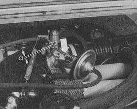

Idle speed regulator must be set with engine running
-
Engine oil temperature 50-70 C (122-158 F)
-
Set idle speed to 850 +/-50 rpm
-
Apply parking brake and select a driving range (under this load idle speed
must be 700-750 rpm and gap a 0.5-1.0 mm (0.02-0.04 in.)
- If necessary adjust gap on push rod (see arrow in picture)
